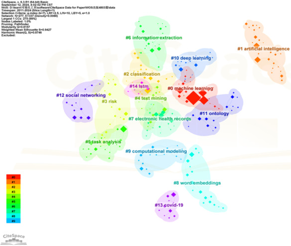
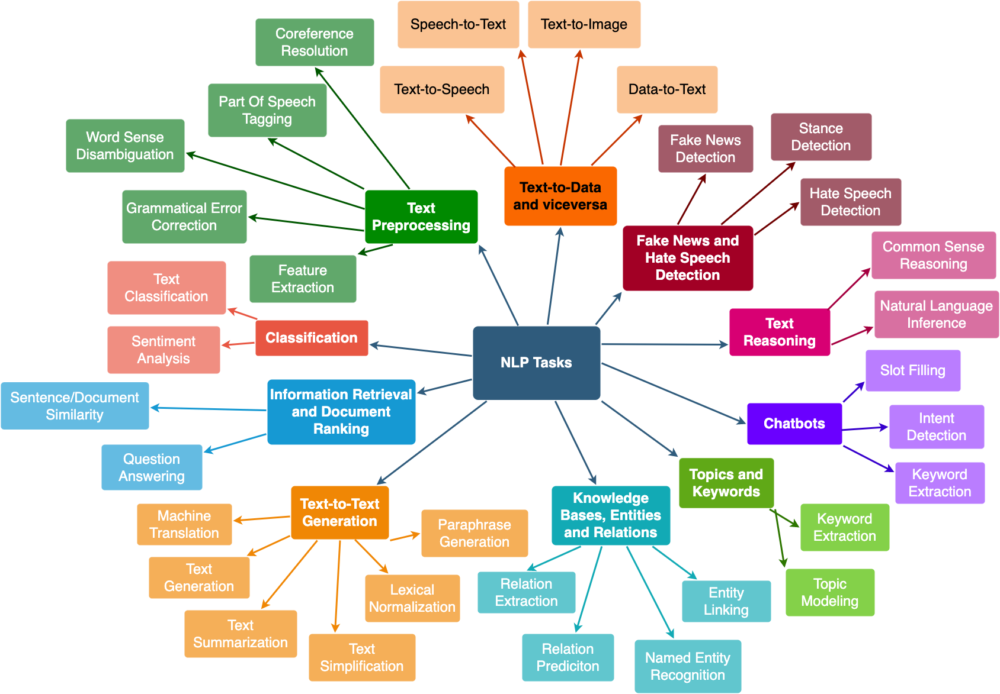
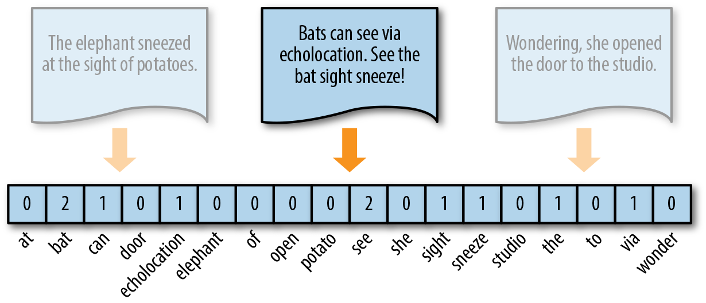
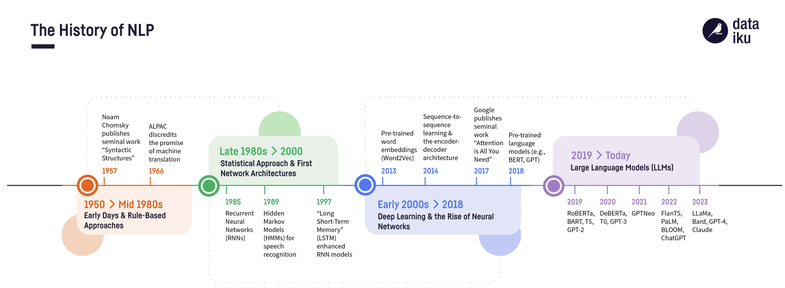
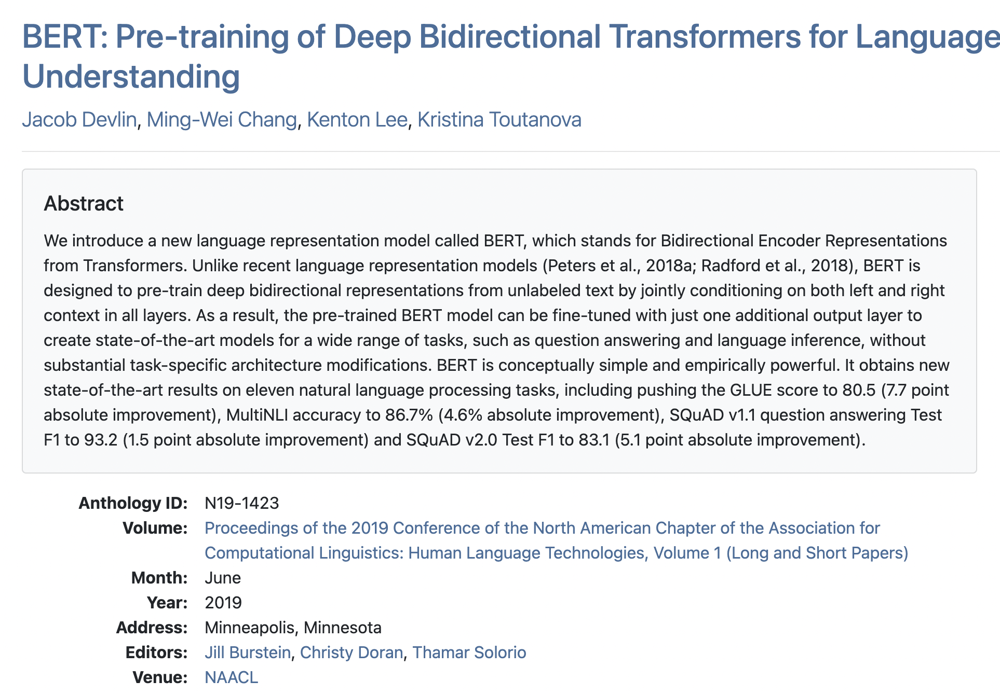

(Introduction au) TAL/NLP avec Python
De la lexicométrie aux modèles pré-entrainés
Vous avez dit NLP üî§ ?
Traitement des données textuelles au sens large
Une période troublée : explosion des usages
- des approches très variées
- venant d’époques différentes
- avec des outils différents
Le texte : données non structurées
- Au début : une suite de caractères
- Avec un encodage : binary ➡️ symbole
- À la fin : du sens intelligible
- Proches de l’humain
Entre : comment structurer l’information ?
Un domaine interdisciplinaire
Des techniques différentes
- Symbolique ancrage linguistique
- se baser sur les règles / théorie du language
- Statistiques (compter des mots)
- un peu old school
- Machine Learning sur données textuelles vectorisées
- Évolution vers les représentations
- modèles de langages
- Approches potentiellement plus proche du langage naturel
Chacune a ses particularités/limites/coûts/outils
Quoi faire avec du texte ?
Des traitements très variés
- Classifier des textes
- Faire des groupes
- Retrouver des éléments
- Identifier des éléments spécifiques
- Noms propres, etc.
- Générer des textes …
De très nombreuses tâches
Donc
- Pour une même tâche, des techniques très variées
- par exemple identifier les thématiques
- Pour une techique, des applications très différentes
- retrouver des éléments vs. les visualiser
- Des métriques d’évaluation différentes
- F1, corrélation, etc.
- Des mises en oeuvres multiples
- Logiciels, programmation, etc.
Difficile de tout faire :)
Quelques notions
Point de départ : du texte
Texte ➡️ Représentation numérique
C’est quoi un texte ? Diversité de supports
- Document avec des chaâines de caractères numériques
- Pas encore mis en forme (PDF, images)
- Enjeux d’OCR, de spatialisation (frame)
Constituer un corpus exploitable
Une étape à part entière (qui peut prendre plus de temps que tout le reste)
- techniques de traitement d’image (segmentation)
- image to text (OCR)
- manipulation de données
Numériques mais non structuré
- Différentes langues (mélangées)
- Des erreurs (OCR)
- Des éléments supplémentaires non textuels (émoticones)
- Et plus …
Et tous les problèmes liés aux représentations numériques des textes (formats, encodage)
Structurer implique de faire des choix
Quelle unité de base choisir ?
- Document entier
- Paragraphe
- Phrase
- Mot / couple de mot (bigramme)
- …
(Dépendance à la langue évidemment)
Représentation d’un texte
Il n’y a pas une seule façon de penser un texte :
- Une suite de lettres
- Une suite de mots
- Des mots liés les uns aux autres
- Des éléments pertinents (noms propres, mots clé, etc.) liés aux autres
Différentes méthodes de représentation
- Par la présence de certains mots
- Approches par dictionnaires
- Ou par motifs : expressions régulières
- Par l’ensemble des mots
- Approches par sacs de mots (bags of words)
- Par encodage de la structure
- Approches par plongement (embeddings) contextuels ou non
Historiquement, l’importance des mots
Importance de l’unité de base du mot
- découpage en mots
- suppression des mots vides
- lemmatisation/stemmisation
Pour de nombreux besoins spécifiques, intéressant de maîtriser les manipulations de bas niveaux
Tokénizer : une opération complexe

Faire des statistiques - la lexicométrie
Analyse fréquentiste
- Comptage
- Spécificité sur certains documents
- Indicateurs spécifiques (mots compliqués, hapax, etc.)
- Evolution / croisement avec d’autres variables
- Modélisation des distributions
- LDA que je ne présenterai pas :)
Du token à la représentation
Passer d’un texte à un vecteur numérique sur l’ensemble de l’unité textuelle représentée.
Du token mot au token segment
Avec le ML, d’autres unités sont importantes
- Passage en unités discrètes
- Tokenisation par mots : “Je vais bien” →
["Je", "vais", "bien"] - Sous-mots (Byte-Pair Encoding, WordPiece) :
- “inconnue” →
["in", "##con", "##nue"] - Caractères : chaque caractère est un token →
["J", "e", " ", "v", ...]
- Tokenisation par mots : “Je vais bien” →
- Dépend du pipeline/conséquences importantes
Que faire avec une représentation
- Facilité de comparer deux vecteurs
- Calculer des distances
- Utiliser des modèles “classiques” de machine learning (ML)
- Faire des représentations (décompositions factorielles, etc)
Parenthèse : notions de machine learning
Notions plus générales que le NLP
- Apprentissage non-supervisé
- Utiliser la structure propre d’un jeu de données (ex. cluster, représentations)
- Apprentissage supervisé
- Utiliser de l’information donnée par l’utilisateur pour guider
Deep learning et modèles
- Augmentation des corpus & des tailles de modèles
- Possibilité d’entraîner des modèles à
- représenter
- prédire
- De plus en plus de modèles préentrainés
Arrivée des embeddings
Espaces latents construits par entrainement de modèles sur des grands corpus (prédiction) : représentations denses

D’abord non contextuels puis contextuels
De plus en plus de modèles
- Modèles de langage
- Encoder les régularités de corpus
- Différentes architectures & tailles
- Modèles fondationnels
- Utilisable pour des tâches spécifiques
- Propriétés émergentes
Une multitude de modèles
https://blog.dataiku.com/nlp-metamorphosis
Quelques remarques en passant
- Importance du corpus d’entrainement
- Spécifiques à la langue / type de textes
- Dépendent de plusieurs niveaux
- Tokenisation
- Corpus d’entrainement
- Méthodes (RLHF)…
- De nouvelles notions :
- fenêtre de contexte
- BERT, GPT, …
En ce qui nous concerne
- Transformers
- BERT (encoder only, 2018+)
- pour le français CamemBert ou FlauBERT
- Récemment, ModernBERT
- BERT (encoder only, 2018+)
- Depuis 2022, explosion des LLM
- Dépasse le NLP (par exemple, Whisper)
- HuggingFace
Modèles BERT
BERT: Pre-training of Deep Bidirectional Transformers for Language Understanding
Entrainement, tâches et fine-tuning
- Les grands modèles fondationnels sont lourds à entraîner (jours avec beaucoup de ressources)
- Une pratique de fine-tuning (apprentissage supervisé ou semi-supervisé)
- Modèle pré-entrainé > utilisation sur différentes tâches
Des modèles de toutes tailles
Un petit tour sur Hugging Face
- Indicateur : nombre de paramètres
- Des modèles de grande taille
- Certains nécessitent des GPU
- Penser à utiliser des services dédiés si nécessaires
Un enjeu : manipuler ces modèles
Évaluer une tâche
- Suivant la tâche (classification, détection de mots, etc.) l’évaluation va être différente.
- Approche machine learning qui apprend sur un corpus :
- contrainte de généraliser au-delà du corpus vu (éviter le sur-apprentissage)
- train/eval/test pour déterminer le meilleur modèle et avoir sa performance réelle
üìå Pas une seule m√©trique ‚Äúmagique‚Äù : le choix d√©pend du contexte !
Cas fréquent : classification
Matrice de confusion : Vrais positifs (VP), faux positifs (FP), faux négatifs (FN), vrais négatifs (VN)
- Exactitude (Accuracy) : Proportion de bonnes prédictions
- Précision (Precision) : Parmi les prédits comme “positifs”, combien sont corrects ?
- Rappel (Recall) : Parmi les vrais “positifs”, combien sont retrouvés ?
- F1-score :Moyenne harmonique de précision et rappel
Un mot sur les biais
- Les modèles pré-entrainés le sont sur des corpus
- De compositions variables
- Avec différentes formes de post-entrainement
Par exemple, biais genrés ; manque de certaines langues ; etc.
Un mot sur l’ouverture
Différents degrés d’ouverture
- Complètement fermé
- Poids ouverts
- Méthodes d’entrainement connues
- Données disponibles
Enjeu en général
Suivant les besoins, trouver la bonne tâche :
- rapidité
- robustesse
- efficacité
- …
Et importance d’évaluer la qualité du traitement.
Faisons un petit tour des lieux
Faire du NLP avec Python
Python dans tout ça
- Language de programmation permettant la manipulation des données
- Au coeur de la révolution IA actuelle
Les bibliothèques Python
- Avant, un peu périmée
NLTK - Pour faire du ML avec
Scikit-learn - Le plus pratique :
SpaCy - Des modèles dédiés :
GenSim - Utiliser directement des modèles de HuggingFace avec
Transformers- Ou des bibliothèques construites dessus …
Mélange savoir spécialisés / compétences génériques
- Manipuler des données
- petites/larges
- Notions de ML
- Bibliothèques spécialisées
Passons à la pratique
Pour aller plus loin
Beaucoup de littérature & de tutoriaux
- le cours de Lino Galliana
- Speech and Language Processing (3rd ed. draft), Dan Jurafsky and James H. Martin
- Text As Data